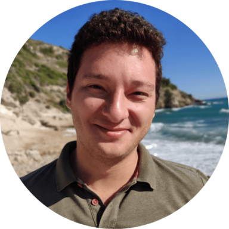

N. Ege Saraç
PhD Candidate in Computer Science
Institute of Science and Technology Austria (ISTA)
Am Campus 1, 3400 Klosterneuburg, Austria
ege.sarac@ist.ac.at
About me
I am a PhD candidate in computer science at the Institute of Science and Technology Austria (ISTA), where I am supervised byTom Henzinger.
My research aims to establish a framework for online and best-effort monitoring for quantitative specifications, highlighting various tradeoffs in monitor design.
Research interests
Runtime verification
Formal methods
Automata theory
Education
PhD in Computer Science, ongoing
Institute of Science and Technology Austria (ISTA)
BSc in Computer Science, 2019
Sabanci University
[CV] [Google Scholar] [DBLP]
News
July 2022: I am looking for an internship opportunity for Summer 2023. If you’d like to get in touch, please don't hesitate to email me!
June 2022: Our paper "Abstract Monitors for Quantitative Specifications" is accepted for publication at RV 22.
Research
Runtime verification (RV) is a lightweight, dynamic technique that determines whether a system's run satisfies its specification. For this, a monitor watches a trace of a system and, if possible, decides after observing each finite prefix whether or not the unknown infinite trace meets a given specification. Theoretically, RV moves the burden from emptiness checking in static verification to membership checking, an easier problem. This shift introduces the opportunity to use more powerful formalisms.
My research focuses on abstractions that enable reasoning about quantitative information and moving RV to a quantitative setting. Such a setting is attractive because quantitative verdicts can be approximate and thus compared regarding their precision, which may be traded against monitor resources. I aim to develop a framework for online and best-effort quantitative monitoring that subsumes a cost-centric theory of monitorability and a precision-cost theory of approximate monitoring. Moreover, I plan to extend the framework to monitors that take corrective action and decentralized monitoring.
Publications
- Abstract Monitors for Quantitative Specifications [pdf] Joint work with Thomas A. Henzinger and Nicolas Mazzocchi International Conference on Runtime Verification (RV) 2022
- Quantitative and Approximate Monitorability [pdf] Joint work with Thomas A. Henzinger Symposium on Logic in Computer Science (LICS) 2021
- Boosting Expensive Synchronizing Heuristics [pdf] Joint work with Ömer Faruk Altun, Kamil Tolga Atam, Sertaç Karahoda, Kamer Kaya, and Hüsnü Yenigün Expert Systems with Applications (ESWA), Volume 167, 2021
- Monitorability Under Assumptions [pdf] Joint work with Thomas A. Henzinger International Conference on Runtime Verification (RV) 2020
- A Theory of Register Monitors [pdf] Joint work with Thomas Ferrère and Thomas A. Henzinger Symposium on Logic in Computer Science (LICS) 2018